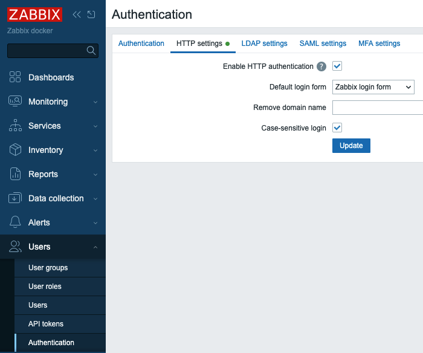
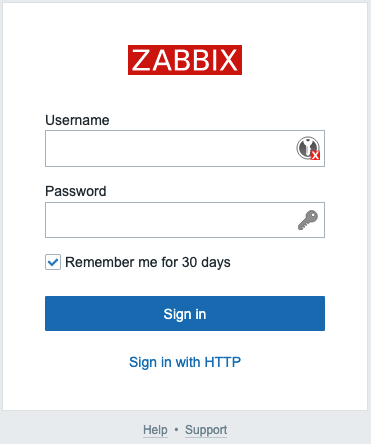

HTTP
HTTP authentication is one of external authentication methods provided by Zabbix and can be used to additionally secure your Zabbix WebUI with basic authentication mechanism at HTTP server level.
Basic HTTP authentication protects Website (Zabbix WebUI) resources with a username and password. When a user attempts to access Zabbix WebUI, the browser pops up a dialog asking for credentials before sending anything over to Zabbix WebUI php code.
An HTTP server has a file with credentials that is used to authenticate users.
First let's see how we can configure basic authentication in HTTP server.
Warning
The examples below provide just minimum set of options to configure basic authentication. Please refer to respective HTTP server documentation for more details
Basic authentication
To enable basic authentication, we first need a "password-file" containing all usernames and passwords that are allowed to access the frontend.
Important
Usernames configured for basic authentication in HTTP server must exist in Zabbix. But only passwords configured in HTTP server are used for users authentication.
To create this file we need the command htpasswd. Execute following commands
to ensure we have this utility:
Install htpasswd utility
Red Hat
SUSE
Ubuntu
Next we will create the required file and the Admin user in it:
Info
NGINX
Apache on Red Hat
Apache on SUSE / Ubuntu
This command will request you to input the desired password for the Admin user
and will then create the specified password-file with the username and encrypted
password in it.
For any additional user we can use the same command but without the -c option
as the file is now already created:
Add additional users
Which will add user1 to the /etc/nginx/httpauth-file. Replace this path with
the path of this file on your distribution/webserver.
In the end the password-file should look something like:
Example password-file
Now that we have a password-file, we can continue to configure the web-browser to actually perform basic authentication, using this file.
Configure authentication file on Nginx
Find location / { block in Nginx configuration file that defines your Zabbix
WebUI (if you followed the installation steps as described in earlier chapters,
this should be in /etc/nginx/conf.d/zabbix.conf) and add these two lines:
Info
Do not forget to restart Nginx service after making this change.
Configure authentication file on Apache HTTPD
Find <Directory "/usr/share/zabbix"> block in Apache HTTPD configuration file
that defines your Zabbix WebUI (in my case it is /etc/zabbix/apache.conf) and
add these lines:
Note
By default configuration has Require all granted, remove this line.
Example
RedHat:
<Directory "/usr/share/zabbix">
...
AuthType Basic
AuthName "Restricted Content"
AuthUserFile /etc/httpd/.htpasswd
Require valid-user
</Directory>
Ubuntu / SUSE
Do not forget to restart apache2 or httpd service after making this change.
Zabbix configuration for HTTP authentication
When we have a WEB server configured with basic authentication it is high time
to configure Zabbix server. In Zabbix menu select Users | Authentication | HTTP
settings and check Enable HTTP authentication check-box. Click Update and
confirm the changes by clicking OK button.

2.1 HTTP users authentication
Remove domain name field should have a comma separated list of domains that
Zabbix will remove from provided username, e.g. if a user enters "test@myzabbix"
or "myzabbix\test" and we have "myzabbix" in this field then the user will be
logged in with username "test".
Unchecking Case-sensitive login check-box will tell Zabbix to not pay
attention to capital/small letters in usernames, e.g. "tEst" and "test" will
become equally legitimate usernames even if in Zabbix we have only "test" user
configured.
Note that Default login form is set to "Zabbix login form". Now if you sign
out you will see "Sign in with HTTP" link below Username and Password fields. If
you click on the link you will be automatically logged in into Zabbix WebUI with
the same username you previously used. Or you can enter different Username and
Password and normally log in into Zabbix WebUI as different user.

2.2 HTTP users authentication login form
If you select "HTTP login form" in Default login form drop-down you won't see
standard Zabbix login form when you try to log out. You actually won't be able
to sign out unless your authentication session expires. The only way to sign out
is to clear cookies in your browser. Then you'll have to go through the Web
server basic authentication procedure again.
Conclusão
Configuring HTTP level authentication adds a critical layer of access control to your Zabbix Web UI by leveraging your web server's native authentication mechanisms. Whether using Nginx or Apache, this approach ensures that users are prompted for credentials before even reaching Zabbix, effectively guarding against unauthorized access at the HTTP entry point. Key considerations include ensuring that usernames used in the HTTP authentication are already defined within Zabbix itself only the password from the web server matters for credential checks and correctly setting up Zabbix's HTTP authentication settings (such as domain removal and case sensitivity options). By coordinating web server authentication settings with Zabbix's internal configuration, you can achieve seamless and secure user login workflows that blend frontend usability with robust protective measures.
Perguntas
-
What advantage does HTTP (web server based) authentication provide compared to Zabbix's internal authentication mechanism? (Consider protection at the web server layer before the user even reaches the Zabbix UI.)
-
Why is it essential that a user must exist in Zabbix even when HTTP authentication is enabled and why does the Zabbix password become irrelevant in that case?
-
What are the configuration options in Zabbix's frontend under “Administration → Authentication” for HTTP authentication, and how might each affect login behavior? Examples include enabling/disabling case sensitivity, domain stripping, and choice of login form.
-
Suppose you disable case sensitive logins and maintain both 'Admin' and 'admin' accounts in Zabbix. How will HTTP authentication behave, and what outcome should you expect?
-
Imagine troubleshooting a login failure when using HTTP authentication: What steps would you take to ensure the web server’s authentication is configured correctly before examining Zabbix settings?
-
From a security standpoint, when would HTTP authentication alone be insufficient and what other authentication methods (e.g., LDAP, SAML, MFA) might you layer on top for added security?